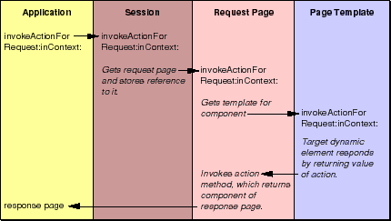

Table of Contents
Table of Contents  Next Section
Table of Contents
Next Section
Table of Contents  Previous Section
Previous Section

Figure 25. Invoking an Action
To be suitable, an element must be able to respond to user actions (a WOSubmitButton or a WOActiveImage, for example). Each of these elements evaluates the invoked action to determine if it "owns" it (that is, its elementID matches the request's senderID).
Table of Contents Next Section